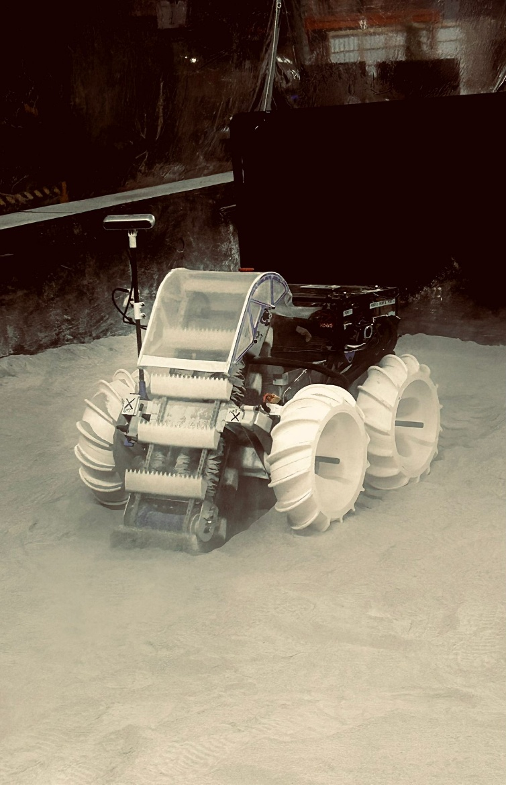
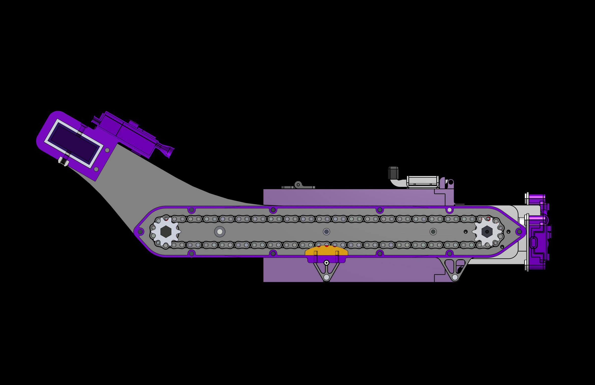
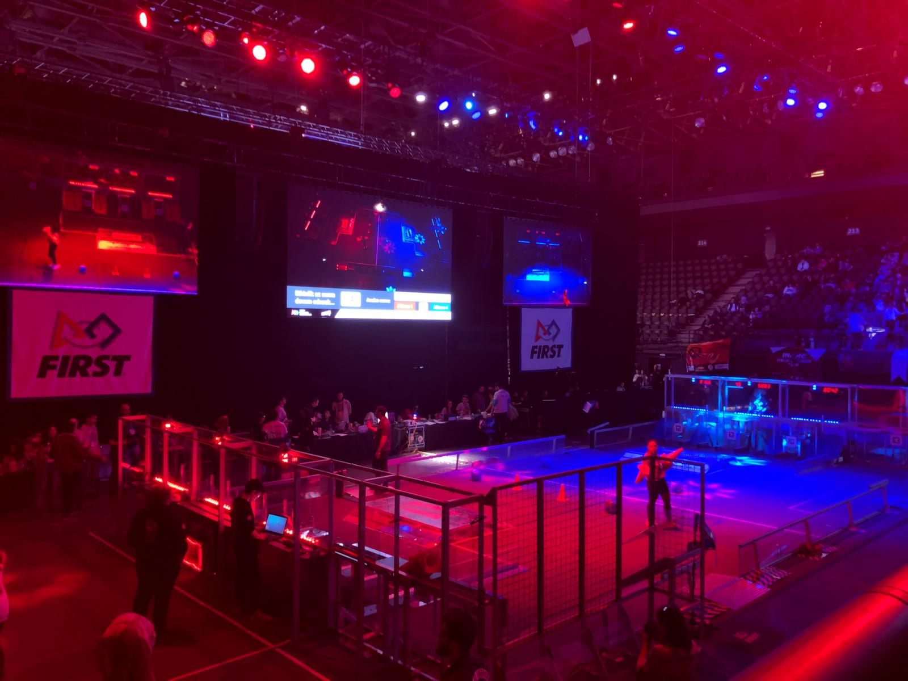
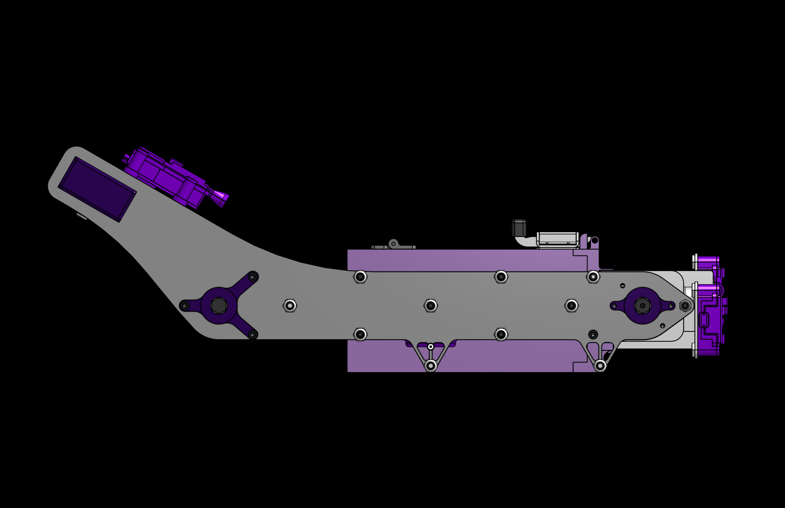
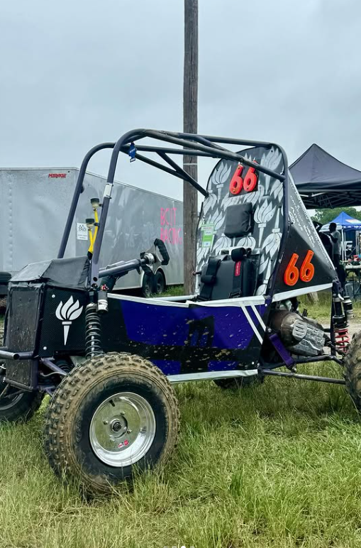

OZAN BULUT GÜREŞCIER
Mechanical Engineering Portfolio
Mechanical Engineering Portfolio
Hello, I am Ozan Bulut Güreşcier, and I am studying Mechanical Engineering with the Technology, Management and Design minor at NYU Tandon School of Engineering. As an engineering student, I am always interested in design challenges that push me to use my engineering knowledge and find creative solutions to different problems. In this portfolio, I will be showcasing various projects I have taken part in throughout my engineering student life with descriptive images, project explanations, challenges, how I overcame those challenges and results of each project.
NASA Lunabotics Challenge invites students from higher education to design and manufacture a Lunar construction robot using NASA's Systems Engineering principles.
I have been a part of NYU Robotic Design Team (RDT) since my freshmen year, and throughout my journey here from design engineer to design lead to systems engineer, I have taken part in the design and manufacturing processes of all our robots.



NYU Motorsports is a university motorsports team that competes in Baja SAE and Formula SAE (FSAE). Baja SAE challenges engineering students to design and build an offroad vehicle capable of withstanding rough terrain conditions over the course of the competition, where many disciplines work together to tackle various engineering challenges.
As an engineer working on the brakes section of the team, I worked on brake assembly and brake testing. As for design work, I worked on designing the accelerator pedal and the pedal stop of the vehicle, which involved 3D design and Finite Element Analysis to ensure lightweight and reliable design.

FIRST Robotics Competition (FRC) is a robotics competition where teams from highschools around the world come together to compete in themed games every year. The competition requires teams to build industrial sized robots with various mechanisms to complete tasks.
I joined the team as a mechanical team member in highschool where I learned how to design and build mechanical components by hand and by using software. Becoming the mechanical lead of team opened up further learning opportunities as I had to also mentor new members with their learning, as well as managing budget and purchasing for the mechanical team, which all proved to be useful in my enrollment in RDT and other future projects.
Posture Checker is a first year engineering project done within the scope of EG1004 lecture, Research, Action and Design (RAD) Challenge. The project combines multiple disciplines to make a device that warns the user when they have a bad posture by using mobile notifications.

This experiment was conducted as a part of the extended essay in physics of the IB curriculum. Aim of the experiment was to understand the effect of the width and the angle of attack of an inverted airfoil on generated downforce.
